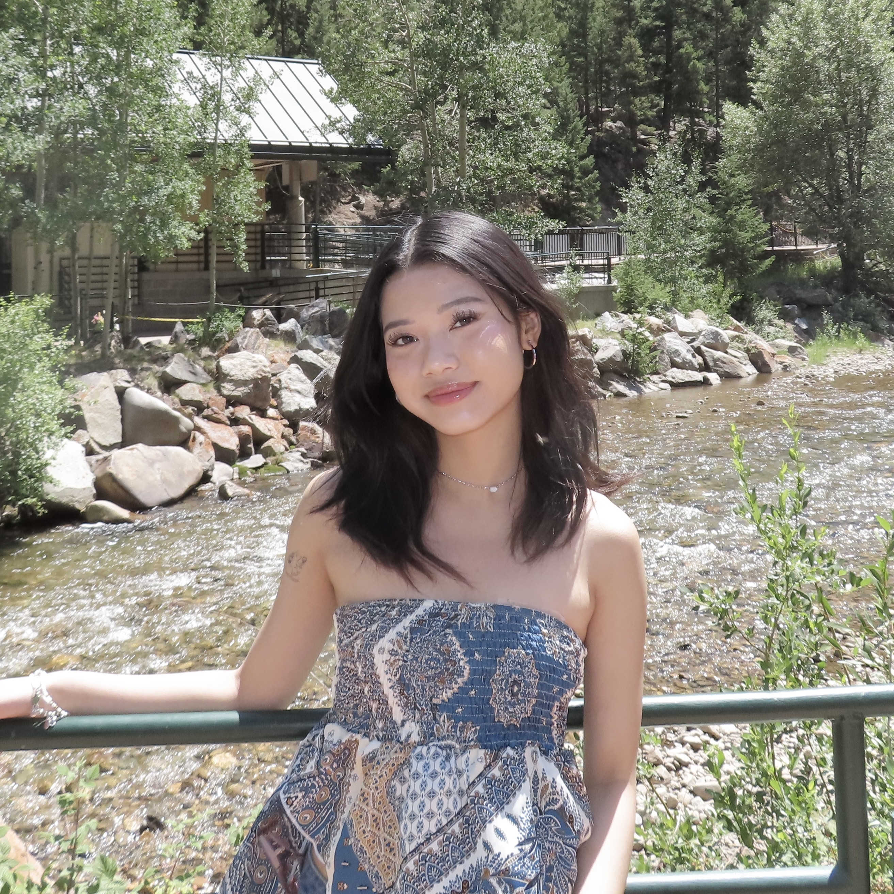

Thao Nguyen
Media Arts & Design Student | UX/UI & Visual Design
Media Arts & Design student with experience in UI/UX, user research, and visual design. Looking for a UX/UI, visual design, or design research internship.
EDUCATION
University of Texas at Dallas Richardson, TX – expected December 2027
B.A. in Media Arts & Design
Relevant Coursework: Design Research Methods, Interaction Design I, Digital Art and Design Foundations, Internet Studio I (In Progress).
Collin County Community College McKinney, TX – October 2023-May 2025
Associate of Arts in General Studies.
Organizations: Member of the Phi Theta Kappa Honor Society.
ACADEMIC DESIGN PROJECTS
TEMOC Nest
- Conducted user interviews, contextual inquiry, focus groups, and surveys to signify any design opportunities.
- Worked in a group of 3 members to develop user flows, wireframes, prototypes, and visual strategies.
- Prototyped an interactive mobile game concept focused on improving at least 10% of students at AHt's sense of belonging and engagement.
Hometown Olympics
- Researched a visual identity of the culture, energy, and environment of Ho Chi Minh City to inform the design process.
- Used color theory, symbolism, and typography to create a cohesive Olympic brand based on overall design goals.
Smart. Seamless. Everyday.
- Designed a promotional poster for a hypothetical technology expo that showcases innovative technologies.
- Developed a visual concept and composition to create an engaging advertisement.
- Applied typography, color theory, visual hierarchy to communicate the event's futuristic theme.
WORK EXPERIENCE
Host - Kyoto Hibachi and Sushi Bar McKinney, TX – July 2025-May 2026
- Supported team members during busy shifts and helped maintain daily tasks.
- Managed multiple guest requests in a fast-paced environment.
- Welcomed and assisted guests while managing seating arrangements and friendly customer service.
Shift Lead - FengCha Allen, TX – March 2022-June 2025
- Supervised all team members on the same shift to provide efficiency.
- Trained new workers on the owner's behalf with support and guidance.
- Developed problem-solving skills in difficult situations with customers to provide satisfaction.
AWARDS AND CERTIFICATIONS
- Selected for one of the top Center of BrainHealth poster designs.
- Certificate in Applied Experience Design & Research at UTD (In Progress).

CONTACT
469-888-2418
thaojennienguyen0705@gmail.com
DFW, TX
Technical Skills
User Research, User Testing, Experience Design, Storyboarding, Wireframing, Prototyping, Visual Strategy, Ideation, Typography.
Web
HTML, CSS.
Applications
Figma, GitHub, Framer, Visual Studio Code, Adobe Creative Suite, Illustrator, Photoshop, Canva, CapCut.
Portfolio Links
GitHub